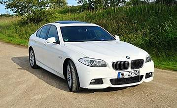

BMW 5 სერია არის აღმასრულებელი კლასის ავტომობილი , რომელსაც BMW 1972 წლიდან აწარმოებს და ყიდის ბაზარზე. ის BMW New Class სედანების მემკვიდრეა და ამჟამად მის მერვე თაობაშია. ავტომობილი იყიდება როგორც სედანი , ასევე, 1991 წლიდან, როგორც უნივერსალი (რეკლამირებული როგორც "Touring"). 5-კარიანი ფასტბექი (რეკლამირებული როგორც "Gran Turismo") 2009-დან 2017 წლამდე იყიდებოდა. 2017 წლიდან თითოეულ მომდევნო თაობას ენიჭება შიდა G-კოდი. ადრე, 2010-დან 2016 წლამდე გამოიყენებოდა F-კოდი , ხოლო 1972-დან 2010 წლამდე - E-კოდი. ეს კოდები გამოიყენება თითოეული მოდელისა და თაობის ერთმანეთისგან განასხვავებლად
